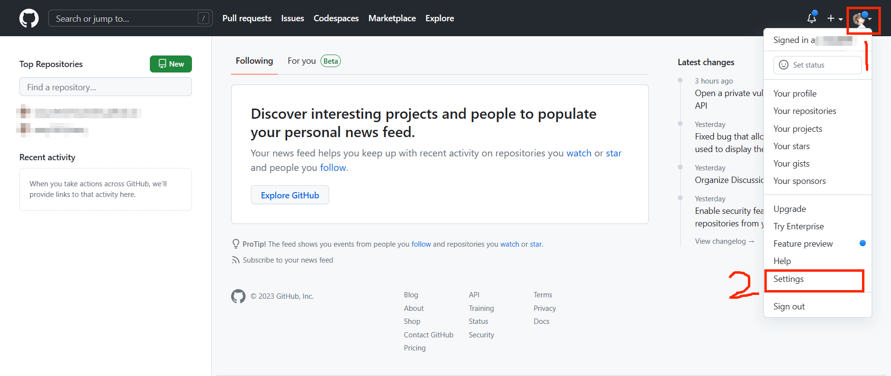
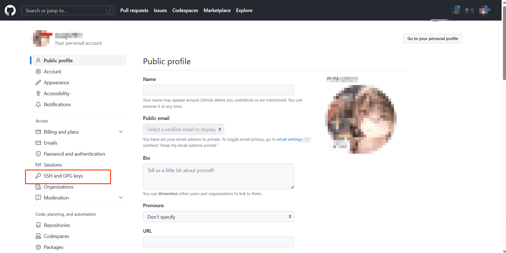
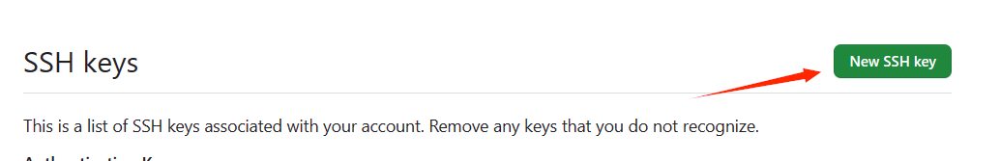
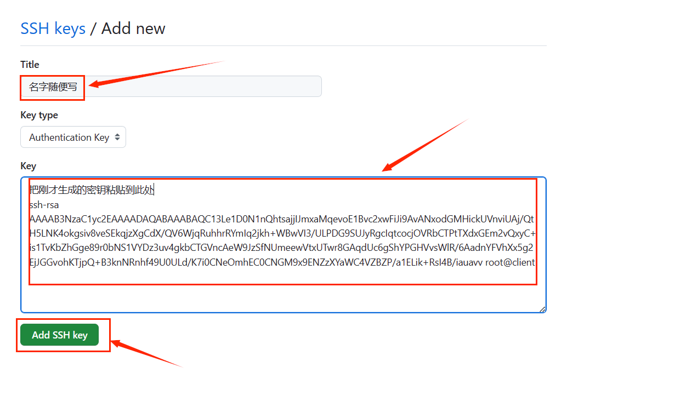
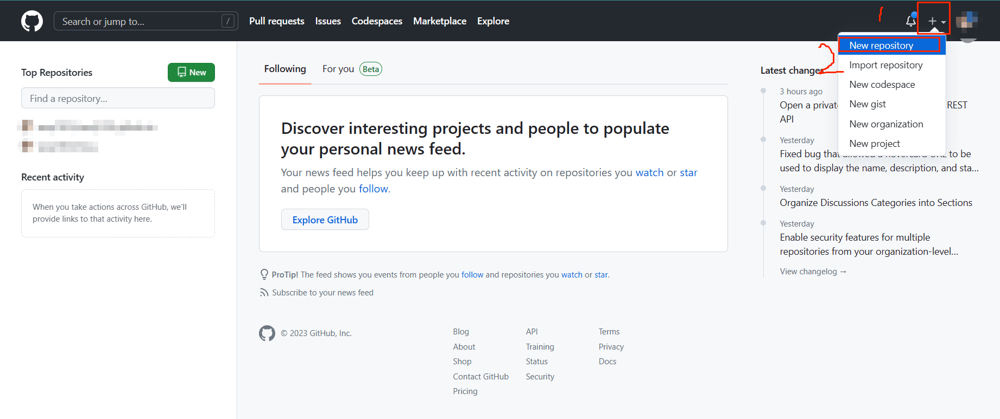
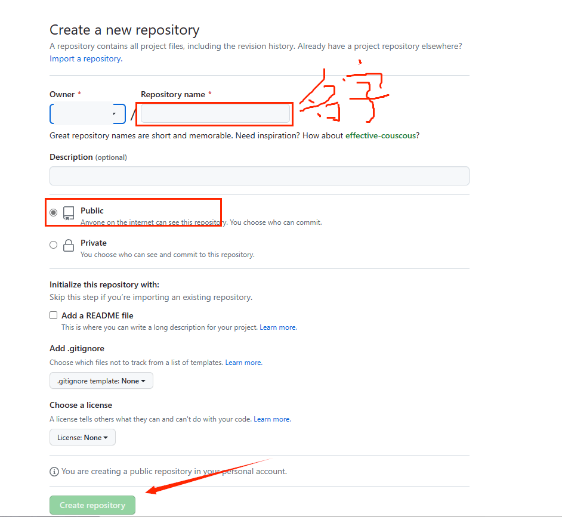
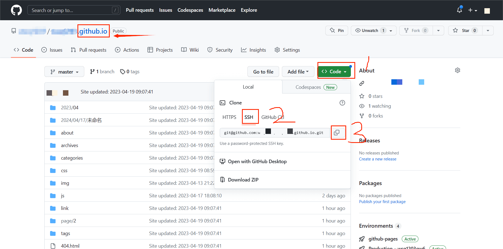

Bolg搭建
环境准备
- 使用centos7镜像创建一个虚拟机，也可以使用Windows直接安装
- 以linux运行环境为例
1 | [root@github ~]# cat /etc/redhat-release |
node.js
- Node.js® 是一个基于 Chrome V8 引擎 的
JavaScript运行时环境。 - 中文官网： https://nodejs.org/zh-cn 下载长期支持版
- 下载node-v16.18.1-linux-x64.tar.xz，最新版的nodejs，centos7不支持
- 安装好了之后，输入
node -v，如果显示的是下载的版本号那就是安装成功了。
1 | [root@github ~]# tar xf node-v16.18.1-linux-x64.tar.xz |
Git
- Git是一个开源的分布式版本控制系统，可以有效、高速地处理从很小到非常大的项目版本管理。 也是 Linus Torvalds 为了帮助管理 Linux 内核开发而开发的一个开放源码的版本控制软件
- Git 官网： https://git-scm.com/downloads
- 安装好了之后，输入
git --version，如果显示的 Git 的版本号那就是安装成功了。 - 通过centos7自带的网络yum源安装就可以
1 | [root@github ~]# yum install git -y |
注册GitHub账号
- GitHub是国外网站，访问较慢，可通过安装插件提速
- Edge浏览器安装油猴插件，搜索
github 镜像加速访问脚本，开启脚本 - 因为我们需要把 Hexo 站点托管到 GitHub 上，所以我们需要一个 GitHub 账号。
- 打开 GitHub 官网，点击 Sigh up，然后输入邮箱、密码、用户名，最后一个按自己需求来写，通过人机验证后，点击 Create account 创建账号就ok了。
系统创建密钥
1 | [root@github ~]# ssh-keygen #下面一直回车就可以 |
为GitHub添加公钥




安装Hexo
- hexo中文官网： https://hexo.io/zh-cn/
- 安装好后 输入
hexo -v输入版本号 代表安装成功了
1 | [root@github ~]# npm install hexo-cli -g |
创建 blog 文件夹
- 所有操作需要在此文件下
输入 hexo init 初始化文件夹，接着输入 cd blog 将目录切换到 blog 文件夹里, 然后输入 npm install 就会在文件夹里生成一些需要的文件。
输入 hexo -h 查看帮助
hexo clean all清除缓存，当修改一些配置文件后需要执行此命令
hexo g 生成静态网页
hexo s 打开本地服务器来查看网页
hexo d推送到GitHub（建议在本地查看确认无误后再推送）
1 | [root@github ~]# hexo init blog #blog为要创建文件夹的名字，可随意 |
butterfly主题
- 在blog目录中拉取稳定版
1 | [root@github ~]# cd blog/ |
- 修改_config.yml应用主题
1 | [root@github blog]# vim _config.yml |
- 安装插件
- 安装 pug 以及 stylus 的渲染器
1 | [root@github blog]# npm install hexo-renderer-pug hexo-renderer-stylus --save |
在 hexo 的根目录创建一个文件 _config.butterfly.yml，并把主题目录的 _config.yml 内容复制到 _config.butterfly.yml 去。( 注意: 复制的是主题的 _config.yml ，而不是hexo的 _config.yml)
1 | [root@github blog]# cat themes/butterfly/_config.yml >> ./_config.butterfly.yml |
- 目录中可能存在一个除了
_config.butterfly.yml和_config.yml之外的一个_config.landscape.yml空文件 - 不需要使用，如果存在就删除它
主题美化
参考大佬博客
推送GitHub
- 先在GitHub上创建项目
- 配置ssh key
- 修改配置文件
创建项目
- 创建格式：用户名.github.io(必须是GitHub的用户名)


进入以.github.io结尾的项目里

- 推送
1 | sh |
- 推送过一段时间即可访问
- 项目名.github.io
本博客所有文章除特别声明外，均采用 CC BY-NC-SA 4.0 许可协议。转载请注明来自 ૮(˶ᵔ ᵕ ᵔ˶)ა！